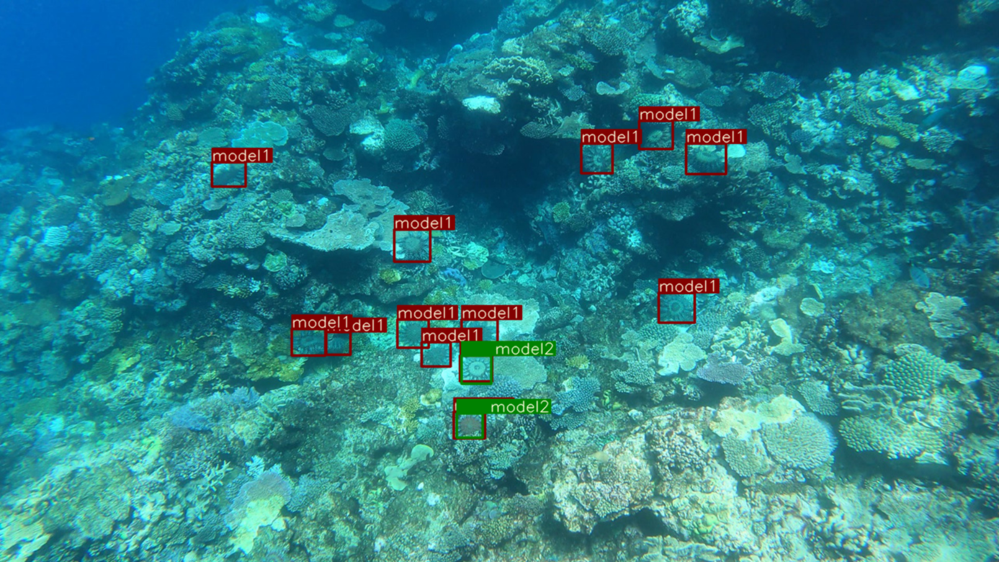

Competences

Machine learning: Employment of several core machine learning
algorithms such as LogisticRegression, Decision Tree, Random Forest, Gradient boosting etc. In addition
I have the knowledge to develop a Neural Network from scratch, implementing input layers, hidden layers, output layers, activation functions, optimizer algorithms, loss functions etc.
With my Master's degree in Artificial Intelligence, I understand the mathematics behind the algorithms as well.
During my research (Protecting the Great Barrier Reef) I gained experience in
Convolutional Neural Networks (ConvNet/CNN), which is a Deep Learning algorithm that can take an image as input and e.g.
has the ability to detect objects or patterns in an image.
Statistical Analysis: Experience with implementing and analyzing correlation matrices of data features, to summarize a large dataset and to identify and visualize patterns in the given data.
In addition, I have experience in analyzing confusion matrices, loss curves etc.
Data Engineering: Acquisition of large data and Feature extraction (transforming arbitrary data, such as text or images, into numerical features usable for machine learning).
Information Retrieval: Is the process of extracting useful information from
unstructured data that satisfies information needs from large collection of data. During my Master's Thesis I implemented several NLP techniques in order
to filter out most important keywords specified in food product descriptions.
Optimization algorithms: Experience with several Hyperparameter Optimization algorithms
such as Hyperband optimization, Bayesian optimization and Random search. This includes optimizing hyperparameters such as: amount of hidden layers,
amount of hidden neurons, optmizer algorithm and learning rate. A neural network that is configured with the optimal
hyperparameters, can be highly accurate. Besides I am familiar with Regularization techniques.
Data Mining: Employing previously mentioned techniques for identifying patterns in large datasets.
• Association
• Data Visualization
• Data Preparaiton / Data cleaning
• Classification
• Clustering
• Neural Networks
• Statistical techniques
• Tracking patterns
• DVC
• Data validatie - Great expectations
• Docker
• MLFLOW / Azure ML studio
• Gradio model deployment azure ml locally
• Azure Cosmos DB, container registry and instances
• Azure Queue's
Work
• Kaggle competetion 2022
• Master's thesis at Ahold Delhaize - Albert Heijn
• Azure Machine Learning Studio - Model Deployment
TensorFlow - Help Protect the Great Barrier Reef

The Great Barrier Reef in Australia is the world's largest coral reef and home to 1500 species
of fish, 400 species of corals and a lot more variety of other sea life.
However, currently the reef is under threat, in part because of the overpopulation of one
particular starfish. The coral-eating crown-of-thorns starfish is the type
of starfish that eats the coral. The Crown-of-thorns starfish (COTS) is one of the few main
factors that is responsible for coral loss in the great barrier reef.
A few COTS on a reef might be beneficial for the biological diversity,
as they keep down the growth of fast-growing coral species and thus will
keep space for other coral species. Nevertheless, currently the population of COTS is
growing in such a fast pace, that there is more coral being eating than it has a chance
to grow back. Their population can break out to thousands of starfish on individual reefs,
and eating up most of the coral and leaving behind a white-scarred reef that will take years
to recover. With the use of an object detection algorithm it is possible to detect them, since
the COTS are among some of the largest starfish species. On average 25-35cm, but they can grow
up to a size of 80cm in diameter. With this size, it makes them easier to spot on a reef.
So one way of improving the efficiency and scale at which marine scientists survey for COTS, is
to implement AI-driven environmental surveys.
Two type of Convolutional Neural Networks has been implemented during this research: Faster R-CNN
and YOLOv5. Furthermore, several Ensemble methods has been explored such as
NMS(Non-maximum Suppression),
Soft-NMS and WBF(Weighted Boxes Fusion).
The full research paper includes: data analysis, data preparation, methods and results.
The research paper is available at Researchgate: Research paper.
Master Artificial Intelligence Thesis - Ahold Delhaize
Will be available soon!
Azure Machine Learning Studio - Model Deployment
Manufy offers a service(platform) where sellers of products can interact with manufacturers, using a chat service to communicate.
However, some of the chat messages violate Manufy’s policies and are illegal. Therefore, the messages needs to be evaluated automatically as they are sent.
With the use of NLP techniques and other feature engineering tasks, we managed to develop a model that labels incoming messages.
Besides the feature engineering and developing the model, I was fully responsible of deploying the model as an endpoint in Azure Machine Learning studio (blue-green deployment).
I used Docker, in order to develop and deploy. The pipeline in Azure (that exists off: container instances, Azure Queues and Azure functions) is able to perform inferencing with the use of the existing endpoint in Azure ML studio.
Furthermore, I was responsible for cloud engineering tasks like: setting-up and managing Cosmos databases in Azure. During this project Git was used to develop.
Career
Certifications
Career Timeline
Snowflake - Data Warehousing
• Account Editions, Regions & Clouds
• Snowflake Identity, Access, Users, & Roles
• Databases, Ownership and Context
• Creating and managing Worksheets and Warehouses
• External Named Stages (AWS S3 bucket)
• Loading Tables Using SQL Insert Statements
• Creating File Formats, Stages, and Copy Into Loading
• Semi-Structured Data including XML and JSON
• Querying Nested Semi-Structured Data
Snowflake - Data Applications
• App builder tools like Streamlit, Python, GitHub, and Web Services Rest APIs
• Internal Named Stages
• Working with SnowSQL (Snowflake's CLI tool), performing file PUTs
About
I (Marc Blomvliet) obtained a Master's degree in Artificial Intelligence at Vrije Universiteit Amsterdam. My Master's thesis focused on improving data quality control of food products, with the use of machine learning techniques. This Master's thesis was conducted at Ahold Delhaize - Albert Heijn. I obtained a Bachelor's degree in Software engineering/Electrical engineering. My Bachelor's thesis focused on Image Recognition which is a tract of Artificial Intelligence.
I am passionate about machine learning, statistics, data mining, programming, and many further data science related fields.
You are welcome to read my Curriculum Vitae, which is available for download below.
Contact